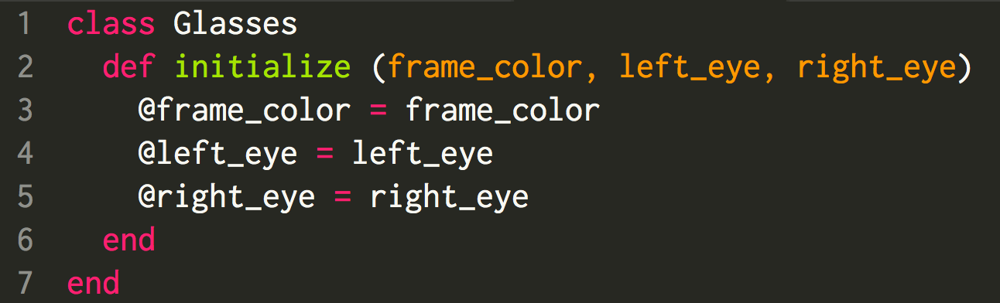
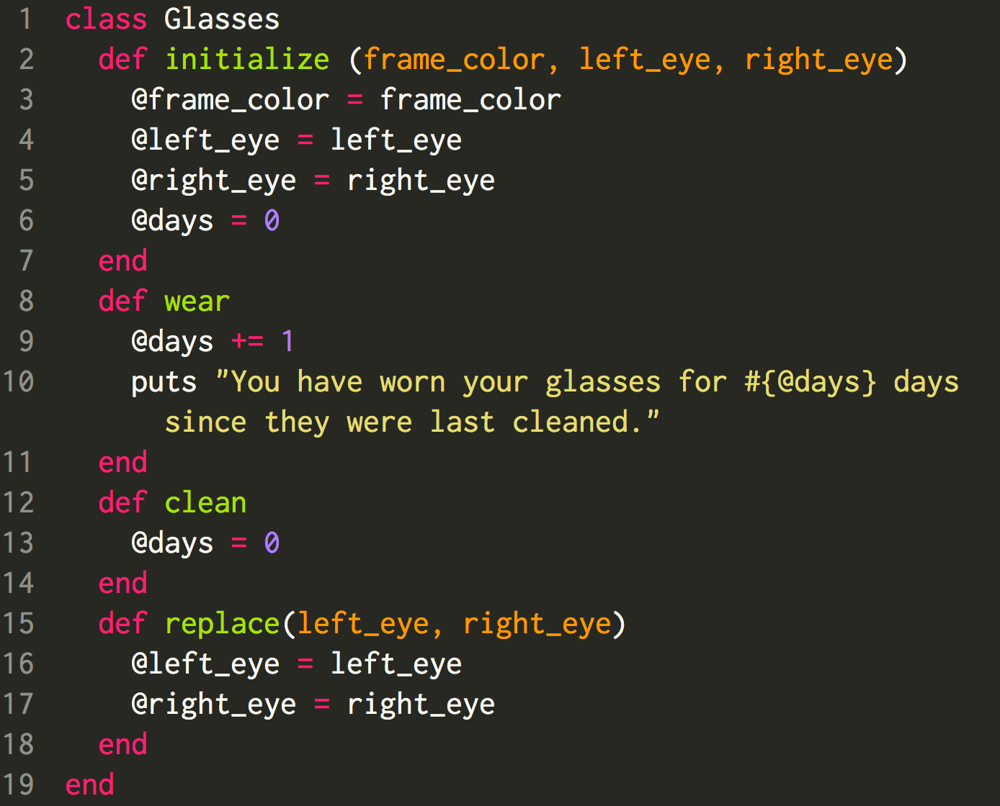
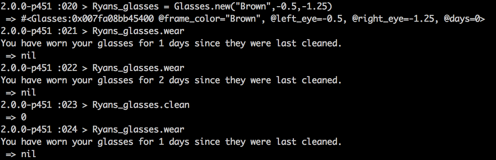
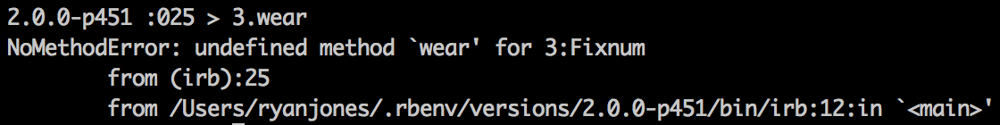

In programming, you'll inevitably come across classes. Classes are a foundational solution for essentially any software. Let's look at an example of a class that we'll build, which we'll call Glasses.
We all know what glasses are--the ones you wear so you can see better. In programming we take real-life scenarios and model them with terminology. With classes there are things that we know and things we can do.
What do we know about glasses?
- The frames have a color.
- The lenses have a prescription.
The things we know about the class we usually let the user specify. We can store that information within variables in the class.
Let's look at how we would set this up and then explain what is happening in each line of code
In line 1 we define our class Glasses that essentially says everything in the next block will belong to our class. We could have named it anything that we liked, but since the objects that we will be building from this will model what we know as glasses, we'll keep the name this way.
Line 2 contains some important information. We specify what the user must input to initialize, or create, an instance of this object. We expect three arguments from the user--the frame color, the left eye prescription, and the right eye prescription. An example of what someone would input is below.
Notice that there are three arguments to match what we defined in our initialize component of our class.
Once we defined our class, we set instance variables. These instance variables are stored within the entire class of Glasses. You'll notice that we have @frame_color and frame_color. The variable @frame_color will be accessible in other methods in our class, whereas frame_color is only accessible within initialize. Since I may want to know each of those pieces of information later, I'm going to store them as instance variables so they will be accessible later. I also created an additional variable, days, which we will use to track how many days we have worn the glasses.
What can we do with glasses?
- Wear them.
- Clean them.
- Replace the lenses.
We can take each of these things and make instance methods to model these actions. Instance methods are methods that can be called on an instance of an object. Let's look at an example.
Below I've written the code for a few instance methods. Notice that for wear I increment the number of days it has been, for clean I reset it to 0, and replace we have the chance to change the values of our instance variables @left_eye and @right_eye.
If we go to our terminal and use the IRB, after inputing the method in, we can test our code. Notice in the terminal how we can see we are calling the instance methods on the object that we defined.
However, if we were to try to call that same method wear on something that is not an instance of our class Glasses, we will receive an error.
Thus these methods are only accessible to the class that we define, which makes sense since we don't wear the number 3.
This should cover the core components of defining a class, intializing a class, defining instance variables, and the instance methods within the class. Hopefully this makes sense!